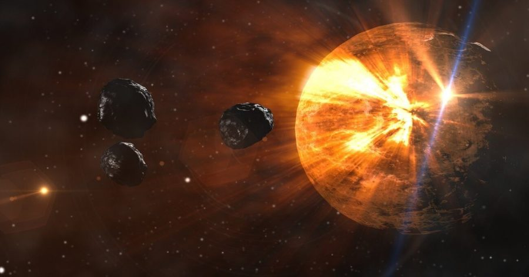

လာမယ့် ရာစုနှစ် (နှစ် ၁၀၀) အတွင်းမှာ အာကာသထဲကနေ ဥက္ကာပျံတစ်သန်းလောက်ထိ ကမ္ဘာမြေဆီကို ဦးတည်လာဖွယ် ရှိတယ်လို့ တရုတ်သုတေသီများက တင်ပြတဲ့ စာတမ်းတစောင်မှာ ဖော်ပြထားပါတယ်။
ကမ္ဘာဆီ ဦးတည်လာတဲ့ ဥက္ကာပျံတွေ ကမ္ဘာ့လေထုထဲထိ ဝင်ရောက်လာပြီး ကမ္ဘာမြေနဲ့ ဝင်တိုက်နိုင်တဲ့ အခွင့်အလမ်းကတော့ နည်းပါတယ်။ နောက်ပြီး ဦးတည်လာမယ့် ဥက္ကာပျံ အများစုကလဲ အချင်း မီတာ ၁၀၀ (ပေ ၃၃၀) အောက်ဆိုတော့ ဒိုင်နိုဆောတွေကို မျိုးတုန်းသွားစေခဲ့တဲ့ ဥက္ကာခဲနဲ့ ယှဉ်ရင်တော့ သိပ်မကြီးဘူးပေါ့ဗျာ။ ဒါပေမယ့် ဒီ ဥက္ကာခဲ တစ်လုံးချင်းစီ ဝင်ဆောင့်ရင် ဖြစ်လာမယ့် အားက အဏုမြူဗုံး တစ်လုံးပေါက်ကွဲရင် ထွက်လာတဲ့ အားထက် ပိုပြင်းပါတယ်။ နောက်ပြီး ဒီဥက္ကာပျံတွေ အခုဘယ်နေရာမှာ ရောက်နေလို့ ဘယ်အချိန် ရောက်လာမလဲ ဆိုတာလဲ ကျွန်တော်တို့ ဘာမှ မသိကြပါဘူး။
အရွယ်သေးတာရယ် အရေအတွက် များတာရယ် ပေါင်းလိုက်တော့ ဒီ ဥက္ကာပျံ အသေးစား လေးတွေကို လိုက်ရှာပြီး သူတို့ရဲ့ လမ်းကြောင်းကို ခန့်မှန်းရတာ အတော်လေး ခက်ခဲစေပါတယ်လို့ ဒီစာတမ်းကို တင်ပြတဲ့ သုတေသီ တွေဖြစ်တဲ့ ပရော်ဖက်ဆာ ဂန်ကျင်းဘို (Professor Gan Qingbo) နဲ့ အဖွဲ့က သူတို့ရဲ့ စာတမ်းမှာ တင်ပြထားပါတယ်။ ဒီသုတေသီ အဖွဲ့ဟာ တရုတ်အမျိုးသား အာကာသ အုပ်ချုပ်ရေး ဌာနရဲ့ (China National Space Administration) အာကာသ အမှိုက်လေ့လာရေးနှင့် အချက်အလက် အသုံးချရေး ဗဟိုဌာန (Space Debris Observation and Data Application Centre) က ဝန်ထမ်းတွေ ဖြစ်ကြပါတယ်။
ဒီ ဥက္ကာပျံတွေရဲ့ သွားရာလမ်းကြောင်းနဲ့ ကမ္ဘာမြေပေါ်ကို ကျရောက်လာနိုင်မယ့် အရပ်ဒေသတွေကို တိတိကျကျ အချိန် စောစီးစွာ ထောက်လှမ်းရှာဖွေနိုင်ဖို့ ဆိုတာက အခုလက်ရှိထက် သာလွန်ကောင်းမွန်တဲ့ နည်းစနစ်တွေ လိုအပ်နေပါတယ် လို့ သူတို့ရဲ့ စာတမ်းမှာ တင်ပြထားပါတယ်။ ဒီစာတမ်းကို တရုတ်ပြည်တွင်းမှာ ဖြန့်ဝေတဲ့ သုတေသန စာစောင်ဖြစ်တဲ့ Acta Astronomica Sinica ဂျာနယ်မှာ တင်ပြထားခြင်းပဲ ဖြစ်ပါတယ်။ (ဒီဂျာနယ်က peer review ခေါ်တဲ့ စာတမ်းတွေ လက်မခံမီ ပညာရှင်တွေက ဒီစာတမ်းတွေကို ဖတ်ရှုပြီး လက်ခံသင့်မသင့် ဆုံးဖြတ်တဲ့ ဂျာနယ်တစောင် ဖြစ်ပါတယ်။ ဒါပေမယ့် အပြည်ပြည်ဆိုင်ရာက ပညာရှင်တွေက review လုပ်တာ မဟုတ်ပဲ တရုတ်ပညာရှင်တွေကပဲ review လုပ်တဲ့ ဂျာနယ်ပါ)။
လက်ရှိမှာတော့ နက္ခတ်ပညာရှင်တွေဟာ ကမ္ဘာပေါ်ကို ကျရောက်ရင် ဘေးဒုက္ခကြီးကြီးမားမား ကျရောက်နိုင်ခြေရှိတဲ့ ဥက္ကာပျံ ကြီးတွေကိုပဲ လိုက်လံရှာဖွေ ထောက်လှမ်းနိုင်ပါသေးတယ်။ မီတာ ၁၀၀ အောက် အရွယ်ရှိတဲ့ ဥက္ကာပျံတွေကိုတော့ ကြီးကြီးမားမား ဘေးဆိုးကြီး ကျရောက်လောက်အောင် အန္တရာယ် မရှိဘူးလို့ပဲ သတ်မှတ်ကြပါတယ်။ ဒီတော့ ဒီလို အရွယ် မီတာ ၁၀၀ အောက် ဥက္ကာပျံတွေ ဘယ်လောက်များများ ကမ္ဘာနားမှာ ရှိနေပြီး ဘယ်နှစ်ခုလောက်က ကမ္ဘာပတ် လမ်းကြောင်းထဲရောက်လာနိုင်လဲ ဆိုတာကို လေ့လာဖို့ သိပ်စိတ်မဝင် စားကြပါဘူး။
တရုတ်ပညာရှင် တွေကတော့ အန္တရာယ်ကို ဒီလို မသိကျိုးကျွန် ပြုထားတာဟာ ဆိုးဝါးတဲ့ အကျိုးဆက်တွေ ဖြစ်လာစေနိုင်တယ်လို့ ဆိုပါတယ်။
၂၀၁၃ ခုနှစ်က ရုရှားနိုင်ငံ ချယ်ယာလ်ဘင့်စ် မြို့ပေါ်မှာ ဥက္ကာခဲ တစ်ခု ပေါက်ကွဲခဲ့ပါတယ်။ ဒီဥက္ကာခဲဟာ အချင်း ၁၉ မီတာ (၆၂ ပေပဲ ရှိတာပါ)။ ဒါပေမယ့် ဒီပေါက်ကွဲမှုကြောင့် ထွက်လာတဲ့ အားက ဟီရိုရှီးမားမှာ ပေါက်ကွဲခဲ့တဲ့ အဏုမြူဗုံးရဲ့ ပြင်းအားရဲ့ အဆ ၃၀ ရှီပါတယ်။ (အဏုမြူဗုံးလိုတော့ ရေဒီယို သတ္တိကြွ လှိုင်းတွေ ထွက်မလာပါဘူး၊ အပူချိန်ကလဲ အဏုမြူဗုံးကို ပြင်းထန်ခြင်း မရှိပါဘူး)
ဒီပေါက်ကွဲမှုကြောင့် အဆောက်အဦ ၇,၂၀၀ ကျော် ပျက်စီးခဲ့ရပါတယ်။ လူအသေအပျောက် မရှိခဲ့ပေမယ့် ၁,၅၀၀ ကျော် ထိခိုက် ဒါဏ်ရာရခဲ့ပါတယ်။ အဓိကကတော့ ကွဲထွက်သွားတဲ့ မှန်စတွေ စင်ပြီး ရခဲ့တဲ့ ဒါဏ်ရာတွေ ဖြစ်ပါတယ်။
တရုတ်ပညာရှင်တွေက ဒီအဖြစ်အပျက်ကို ထောက်ပြပြီး မီတာ ဆယ်ဂဏန်းလောက်ပဲ ရှိတဲ့ ဥက္ကာပျံတွေကလဲ ကြီးမားတဲ့ ပျက်စီးဆုံးရှုံးမှုတွေကို ဖြစ်စေနိုင်တယ်လို့ ထောက်ပြကြပါတယ်။
ဒီပညာရှင်တွေဟာ သူတို့ရဲ့ စာတမ်းအတွက် ကမ္ဘာလုံးဆိုင်ရာ ဥက္ကာပျံ အချက်အလက် မှတ်တမ်း (global asteroid database) ကို အသုံးပြုခဲ့ကြတာပါ။ ဒီအထဲက ဥက္ကာပျံ အသေးစား လေးတွေရဲ့ သွားရာလမ်းကြောင်းတွေကို အသေးစိတ် တွက်ချက်ကြည့်တဲ့အခါ ဥက္ကာပျံ အလုံး ၇၀၀ ကျော်ဟာ လာမယ့် နှစ် ၁၀၀ လောက် အတွင်းမှာ ကမ္ဘာနဲ့ တိုက်မိနိုင်တယ် ဆိုတာကို တွေ့ရှိခဲ့ ကြပါတယ်။
ဒီအထဲကမှ ၅ ခုက ကမ္ဘာနဲ့တိုက်မိနိုင်ခြေဟာ အပုံ ၁၀၀၀ ပုံ ၁ ပုံ ရှိတယ်လို့ ဆိုပါတယ်။ ဒါဟာ အာကာသ ဥက္ကာပျံ တွေအနေနဲ့ ပြောရရင် အတော်မြင့်တဲ့ ဖြစ်နိုင်ခြေ (probability) လို့ ပြောလို့ရပါတယ်။ နောက်ပြီး ဒီ ဖြစ်နိုင်ခြေကလဲ အချိန်မရွေး ပြောင်းလဲသွားနိုင်ပါတယ်။
နောက်ပြီး ဒီ သုတေသီတွေဟာ ဥက္ကာပျံတွေ ဖြစ်ပေါ်မှု သီအိုရီကို အခြေခံပြီး ကမ္ဘာနဲ့ ပါတ်ဝန်းကျင်ကို ဦးတည်လာနေနိုင်တဲ့ ဥက္ကာပျံအရေအတွက်ကို ခန့်မှန်းတွက်ချက် ခဲ့ကြပါတယ်။ သူတို့ရဲ့ တွက်ချက်မှု အရ ဒီအရေအတွက်ဟာ လာမယ့် နှစ် ၁၀၀ အတွင်း ၁ သိန်းကနေ ၁ သန်းကြား ရှိမယ်လို့ ဆိုပါတယ်။
အရင်တုန်းက ဂရုမပြုမိခဲ့တဲ့ ဥက္ကာပျံတွေဟာ နေအဖွဲ့အစည်းရဲ့ နေရာ တစ်စိတ်တစ်ပိုင်းမှာ စုနေပြီး အတူတကွ ခရီးလှည့်လည်နေတာ ဖြစ်နိုင်တယ်လို့ သူတို့က ဆိုပါတယ်။ ဒီ စာတမ်းပါ အချက်တွေဟာ ကမ္ဘာနား ဝန်းကျင်ကို ရောက်လာမယ့် ဥက္ကာပျံတွေ ရှာဖွေရေး နည်းဗျူဟာတွေ ချမှတ်နိုင်ဖို့ အထောက်အကူ ဖြစ်စေမယ်လို့ သူတို့က ပြောပါတယ်။
ကွမ်းကျိုးပြည်နယ် က နာမည်ကျော် တရုတ် ဘူမိဗေဒ ပညာရှင် ပရော်ဖက်ဆာ ချန်ပင်းကတော့ သိပ်စိုးရိမ်စရာ မရှိဘူးလို့ ပြောပါတယ်။ သူဟာ ဒီနှစ်ပိုင်းအတွင်းမှာ တရုတ်ပြည်မှာ ကျရောက်ခဲ့တဲ့ ဥက္ကာတွင်း နှစ်တွင်းကို ရှာဖွေတွေ့ရှိ သုတေသန ပြုပြီး နာမည်ကျော် လာသူ ဖြစ်ပါတယ်။
“ဒီ ဥက္ကာပျံ အသေးလေးတွေက ပညာရှင်တွေ ကြားနဲ့ လူထုကြားမှာတော့ စိတ်ဝင်တစား ဆွေးနွေးစရာ ခေါင်းစဉ်တွေပေါ့ဗျာ။ ဒါပေမယ့် ဒီလောက်ပါပဲဗျာ” လို့ သူက ပြောပါတယ်။ ဒီဥက္ကာခဲလေးတွေက သေးတာမို့ အများစုကတော့ ကမ္ဘာ့လေထုထဲ ဝင်ရောက်တဲ့ အချိန်မှာ လောင်ကျွမ်းသွားဖို့ များတယ်လို့ သူက ပြောပါတယ်။
ပရော်ဖက်ဆာ ချန်က ဆက်ပြောရာမှာ လက်ရှိအချိန် တရုတ်ပြည်မှာ ဥက္ကာပျံ လေ့လာရေး သုတေသနက အတော်လေး HOT ဖြစ်နေတာလို့ ပြောပါတယ်။ အစိုးရက ဒီသုတေသနအတွက် ရန်ပုံငွေ အမြောက်အများ ချပေးခဲ့တယ်လေလို့ သူက ပြောပါတယ်။
တရုတ်အစိုးရဟာ ဥက္ကာပျံကနေ ကျောက်သား နမူနာတွေ ကောက်ယူမယ့် ဂြိုလ်တု လွှတ်တင်ဖို့ စီစဉ်နေပြီး ဥက္ကာပျံ ကာကွယ်ရေး ရေဒါစနစ် တည်ဆောက်ဖို့လဲ သုတေသန ပြုနေပါတယ်။
အခုလို ဥက္ကာပျံတွေ ရှာဖွေတာဟာ သိပ္ပံအတွက် သက်သက်တော့ မဟုတ်ပါဘူး။ ဒါဟာ တရုတ်အစိုးရရဲ့ အမျိုးသား ကာကွယ်ရေး မူဝါဒနဲ့လဲ အကြုံးဝင်နေပါတယ်။ အမေရိကန်နဲ့ အခြားနိုင်ငံတွေက အာကာသ တပ်ဖွဲ့တွေ ဖွဲ့စည်းနေတဲ့ အချိန်မှာ တရုတ်အစိုးရကလဲ နောက်ကျကျန်နေ ခဲ့မှာကို မလိုလားပါဘူး။ ဒီ ဥက္ကာပျံ ကာကွယ်ရေး ရေဒါဟာ ဒုံးပျံကာကွယ်ရေး စနစ်တွေနဲ့ ပေါင်းစပ်အသုံးပြုနိုင်လိမ့်မယ်လို့ သတင်းတွေက ဆိုပါတယ်။
Reference: Could a million small asteroids be on a collision course with Earth | South China Morning Post
လာမယ့်ရာစုနှစ်မှာ ဥက္ကာပျံ တစ်သန်းလောက် ကမ္ဘာဆီ ဦးတည်လာမယ်ဟု တရုတ်ပညာရှင်များပြော

September 30, 2021
Other Posts
- ဒြပ်ထု (mass) နဲ့ အလေးချိန် (weight) ဘာကွာလဲ
- ကြာသပတေးဂြိုဟ်ပေါ် လူသားတွေ ဆင်းနိုင်မလား
- ကမ္ဘာ့ သံလိုက်စက်ကွင်း ပြောင်းပြန်ဖြစ်ခဲ့လျှင်
- နေအဖွဲ့အစည်းအတွင်း သက်ရှိတွေ ရှိနေနိုင်တဲ့ လ ၆ စင်း
- မိုင်းထိသွားတဲ့ မြန်မာ့လေကြောင်းပိုင် ဒါကိုတာလေယာဉ်ကြီးကို ပြင်ဆင်ခဲ့စဉ်က
- ရုရှားအာကာသယာဉ်ကြောင့် အပြည်ပြည် ဆိုင်ရာ အာကာသ စခန်း ထပ်မံတိမ်းစောင်းသွား
- သိပ္ပံ ပညာရှင်တွေ အဖြေရှာမရတဲ့ ကမ္ဘာ့လေထုထဲက ထူးဆန်းတဲ့ အသံများ
- ကလေးတွေ ဘဝအောင်မြင်ရေးအတွက် Marshmallow Experiment ကပေးတဲ့ မိဘတွေအတွက် သင်ခန်းစာ
- လက်ရှိ ဘက်ထရီတွေထက် ၁၀ ဆလောက် ပိုခံနိုင်မယ့် ဘက်ထရီသစ် တီထွင်အောင်မြင်
- နေကို တယ်လီစကုပ်အဖြစ် အသုံးပြုပြီး အခြားကမ္ဘာက သက်ရှိတွေ ရှာဖွေဖို့ နာဆာ ပညာရှင်များ အဆိုပြု